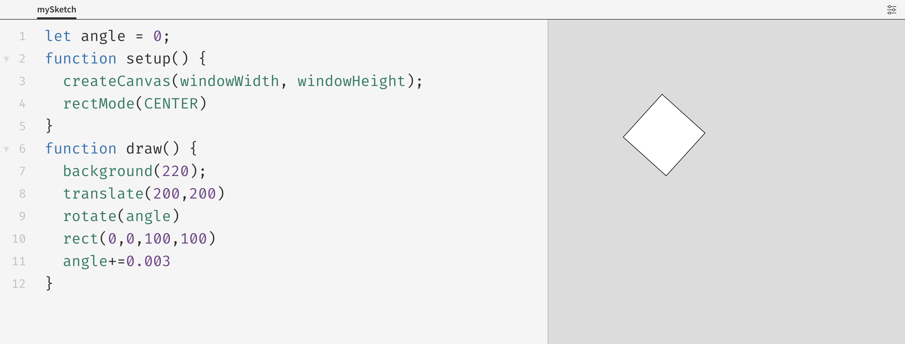

TRANSLATE AND ROTATE
TRANSLATE
This function changes the original x-axis and y-axis positions to a new position. For example , the origin is x=20 and y=20 ,now translate it to a new origin x=250 and y=250.
translate(x-axis , y-axis)
You can translate an object in 2D as well as in the 3D .In 3D ,since the origin is in the middle ,so when translate up or left the values becomes negative .But as we move down or right the value remain positive . We need to put our code inside the push() and pop().So one translate does not effect the other translate function.
ROTATE
Rotation in 2D is quiet simple as it just requires the rotate() function.As we know that the origin of square or rectangle are on the top left hand corner ,so for rotating a square from the middle p5.js have the function of rectMode(CENTER), which when used in the setup the rectangle and translate it , will start rotating from the middle.

Rotation in 3D is different ,as the rotate function work along the specific axis .In the x-axis is rotateX ,in y-axis is rotateY and in the z-axis is rotateZ.
rotateX

rotateY
rotateZ
These rotate functions can be used separately as well as together.

Rotate take the parameter of angle either in radians or degrees .rotateX(angle)
For example:
Rotate in 2D with angle in radians
rotate(HALF_PI)
Rotate in 3D with angle in radians
rotateX(HALF_PI)
Radians are angle measurements based on the value of "PI" and is used to rotate objects. Four radian values are frequently used and their equivalent degrees are given below.
* TWO_PI = 360 degrees
* PI = 180 degrees
* HALF_PI = 90 degrees
* QUARTER_PI = 45 degrees